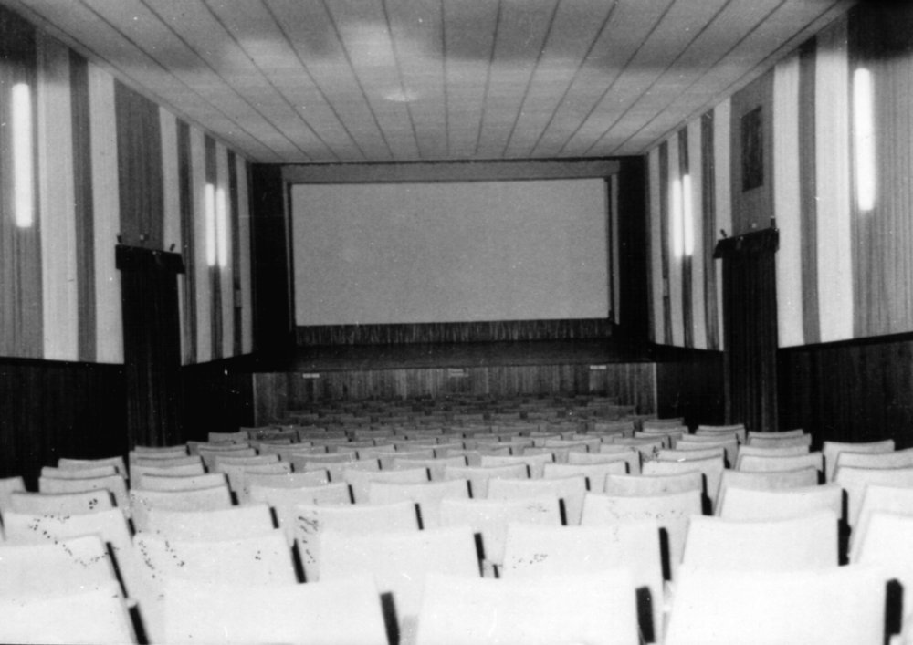

There was an old cinema called "Cinemania". Its seats were a little worn, the screen wasn't the most modern, but it had a timeless charm. Cinema was born many years earlier, when a young director named Alfredo, full of passion for the seventh art, decided to transform an old warehouse into a cinema. With little funds and a lot of creativity, he built the screen, he chose the seats and opened the doors to the community. Over the years, "Cinemania" became a meeting point for cinema lovers, a place where stories came to life and the magic of the silver screen brought people together. Although time had left its mark on the structure, the beating heart of cinema remained intact: the passion for shared stories and the enchantment of a film that unites spectators in a single collective emotion.
